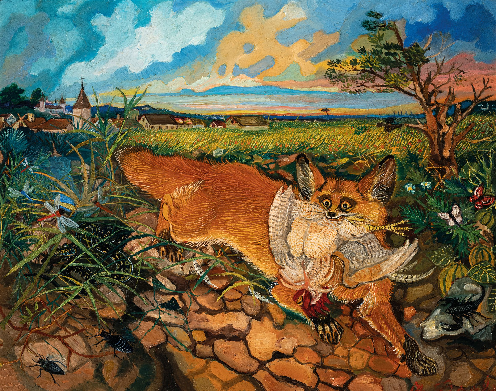

And so an ecologist who begins by asking himself how life works very quickly finds himself asking instead why the natural ecosystems are made up of so many parts and why there are so many of each kind of part. Before he can answer an engineer’s question “how does this work,” he is faced with even more fundamental questions beginning with “why”: Why are there so many different kinds of plants and animals? Why are some common but others rare? Why are some large but others small? Why do they sometimes do such peculiar things?
Paul Colinvax, 1978. Why big fierce animals are rare? Princeton University Press.
Chi sono
Ebbene, sono un ecologo. Cos’è un ecologo? Un ecologo è qualcuno che trova entusiasmo nella bellezza e nella complessità della natura. Sono anche un educatore appassionato e apprezzo molto le occasioni di insegnare e imparare con pubblici di ogni livello di esperienza.
Ora
-
Ricercatore, Ecologia AcquaticaEAWAG, Svizzera
In precedenza
-
PostdocWSL, Svizzera2023–2025
-
Dottorato in EcologiaUFRN, Brasile2017–2021
-
Laurea magistrale in EcologiaUFRGS, Brasile2015–2017
-
Laurea in Scienze AmbientaliUniversità di Barcellona2008–2014
Creato da Leonardo Capitani; Aggiornato il 16 July 2026